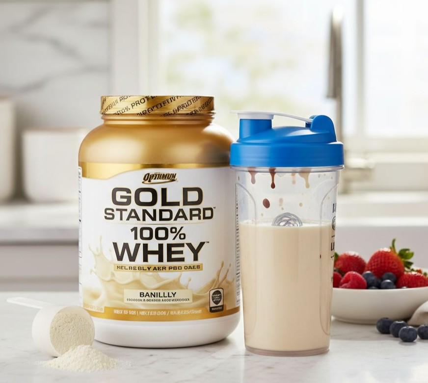
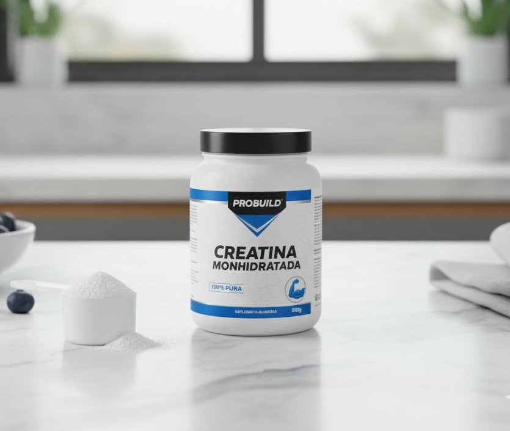
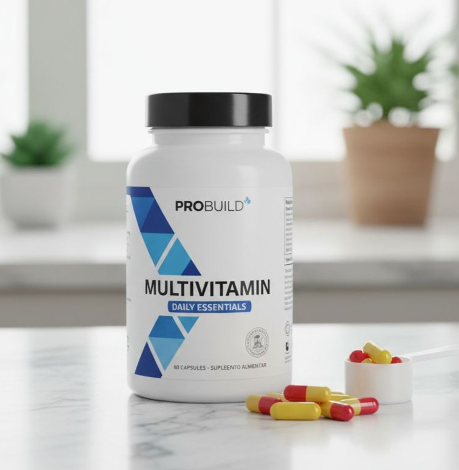

Proteínas e Aminoácidos (Whey, BCAA)
Essenciais para a recuperação muscular e construção de massa magra. Entenda quando e como usar o famoso Whey Protein, Caseína e BCAA para maximizar seus treinos.
Explorar Guia CompletoOtimize seus resultados com um guia prático sobre os complementos mais eficazes para sua rotina de bem-estar. Consulte sempre um profissional de saúde antes de iniciar qualquer suplementação.

Essenciais para a recuperação muscular e construção de massa magra. Entenda quando e como usar o famoso Whey Protein, Caseína e BCAA para maximizar seus treinos.
Explorar Guia Completo
Saiba por que a Creatina é o suplemento mais estudado e seguro para aumentar força e desempenho. Além disso, conheça os benefícios (e riscos) dos pré-treinos.
Ver Detalhes
Muitas vezes negligenciados, Vitaminas e Minerais são vitais. Foco no Ômega 3 para a saúde cerebral e inflamação, e nas vitaminas chave para a imunidade.
Aprender MaisO conteúdo desta página é informativo. Antes de iniciar qualquer rotina de suplementação, procure sempre um nutricionista ou médico para avaliar suas necessidades individuais.